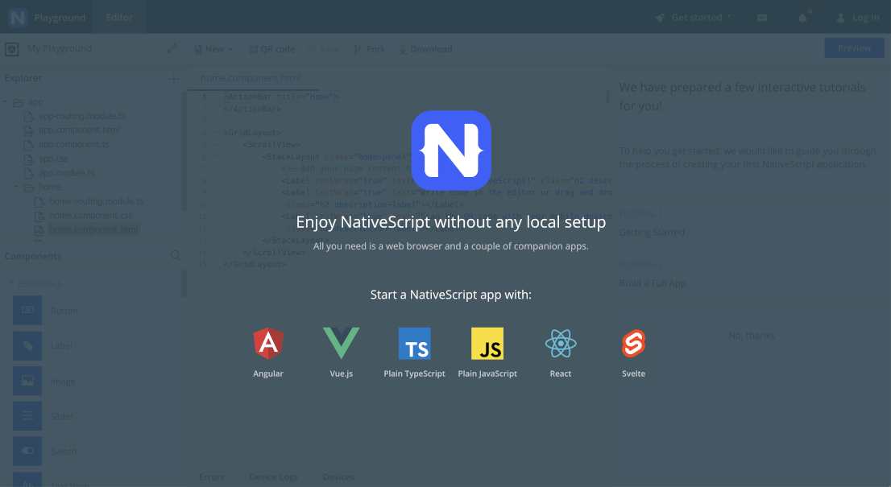
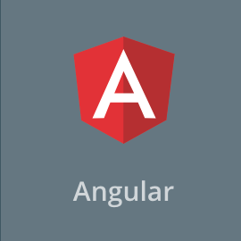
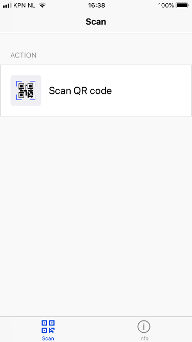
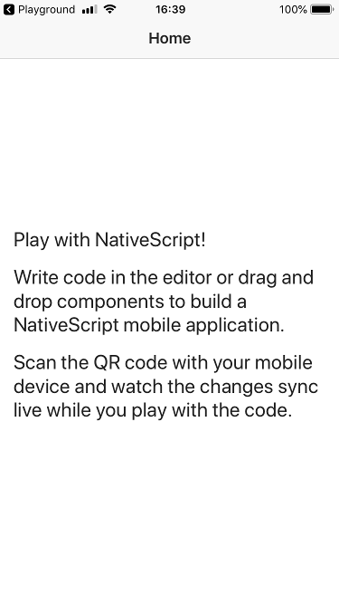
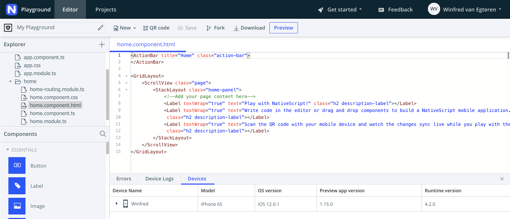
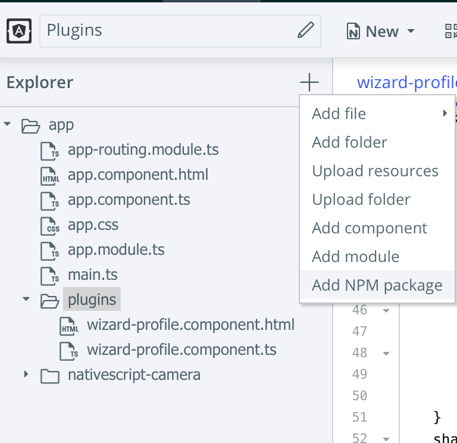

Getting Started with the NativeScript Playground
Now you’ll learn how to use the NativeScript Playground to get started quickly, build your first app, and run the app on your phone.
About the NativeScript Playground
The NativeScript Playground is a browser-based environment for developing simple NativeScript apps. It’s a great place to get started learning NativeScript, as you can develop apps without needing to install the various SDKs and tools needed for native iOS and Android development. All you need is your browser, and an Android or iOS mobile device connected to the internet to get started.
Exercise: Explore the Playground and Run an App
In this exercise, you’ll explore the NativeScript Playground and learn how to run an app built in the Playground on your mobile device.
Prerequisites
Before we get started, you’ll need to install 2 apps on your mobile device:
In your respective App Store (Google Play or Apple App Store), locate both apps and install them on your mobile device. If you’re having trouble finding the app, use the links above.
Explore the NativeScript Playground
Next, navigate to the NativeScript Playground in your browser.

Click “Angular” to begin.

After clicking “Angular” a QR code will appear, and you’ll be notified that your Playground is ready: Open the NativeScript Playground app on your mobile device, and select the “Scan QR code” action.

Using the QR code scanner in the NativeScript Playground app, scan the QR code displayed on the NativeScript Playground website.
After scanning the QR code, the NativeScript Playground app will open the NativeScript Preview app and dynamically load the code from the Playground Website and launch a native mobile app on your mobile device!
When all of this happens, you should see this on your mobile device:

…and you should also see the following on the Playground website:

Congratulations! You just used the Playground to write your first mobile app with Angular. Then, you ran the app on your phone. That was fast - and you didn’t need to install anything on your computer!
OK, we know you didn’t have to do much of anything to write this app, but we promise you’ll learn more and build something more advanced during the workshop.
Before we move on, let’s take a minute to understand what happened and explore the NativeScript Playground UI.
How the NativeScript Playground Works
The NativeScript Playground is a web-based IDE. You write your Angular code in the browser, then save it. When you scan the QR code, the NativeScript Playground app coordinates with the NativeScript Preview app and reaches out to the Playground website. The code is pulled down, loaded into the NativeScript runtime in the Preview app, and renders native iOS/Android UI on your mobile device.
Exploring the Playground UI
Now that you’ve learned how the Playground works, let’s explore the UI.
As you’ll notice, the Playground UI is similar to a basic IDE, like Visual Studio Code, Visual Studio, Eclipse, or Web Storm.
On the left is a file explorer, where you can add or update files and folders to your mobile app:
The large central area is a file editor with Intellisense:
The bottom central area shows you which mobile devices are connected to the Playground and device/error logs for debugging purposes.
Connected Devices
Hold on…the Playground shows you connected devices. Yes, that’s right. When your mobile device connects to the Playground, it registers itself with the website. You can see a variety of information about a connected device.
Pretty cool, right? Well, there’s something even cooler about the Playground: LiveSync.
LiveSync
LiveSync is a technology that syncs changes made in the Playground down to your mobile device in real time. This means that you can quickly make changes to your app in the Playground and the changes will be instantly pushed to connected devices. If you’ve ever done mobile development before, you’ll understand how useful this is - getting feedback from your code running on real mobile devices usually takes time, but with LiveSync, it’s instantaneous.
LiveSync in Action
Now that you’ve learned about LiveSync, let’s see it in action.
Exercise: Using LiveSync
In this exercise, you’ll learn how to use LiveSync by interacting wth the Playground website and seeing the app on your mobile device update automatically.
Getting Started
Before we get started with this exercise, be sure to have your Playground app loaded in the NativeScript Preview app.
If your app isn’t running, press the “QR code” button in the Playground website, and re-scan the code on your mobile device:

Understanding Markup
Now that your app is running on your mobile device, let’s make a change.
Start by finding the home.component.html file in the Explorer section on the left, then open it for editing by clicking on it.
You’ll notice some markup in the home.component.html file. It’s not important for you to understand the markup right now, but you should know that any markup you place in this file will affect the native UI generated on the home page of your app.
Even though you may not understand all of the markup, you can probably guess at the meaning on most tags. NativeScript UI markup is can be easy to understand, because it’s similar to HTML.
For example, look at the markup that displays a label on the screen that contains the text “Play with NativeScript!”:
<Label
textWrap="true"
text="Play with NativeScript!"
class="h2 description-label">
</Label>
Changing markup with LiveSync
Let’s change the text in the home.component.html file.
Change the text that reads “Play with NativeScript!” to somethings else. Feel free to use the code snippet below, or your own text.
<Label
textWrap="true"
text="Using LiveSync is easy and convenient!"
class="h2 description-label">
</Label>
After making this change, press the “Save” button:

Then, look back at your mobile device, and watch the UI of the app change.
Easy and cool!
We’ll continue to rely on LiveSync throughout this workshop to get instant feedback in our apps.
Take some time to play around a bit more to get a feel with the various components that NativeScript offers you. You can drag and drop the components from the components palette to the editor. Take a little time to understand the different layouts. They are the key elements for every UI.
Lesson 1 - UI
In this lesson we are going to familiarize ourselves with some of the most commonly used UI components in NativeScript.
For this exercise we will use the contents of the app/profile folder,
which already contains some pieces of the app
that we need.
If you are using Playground then you should head to:
https://play.nativescript.org/?template=play-ng&id=HIKegT&v=2
Please Fork the Playground app to create your ‘own’ Playground
environment.
If you open profile.component.ts you will notice that our component
has an attribute profile with some populated
values. In the next few steps we will create a screen that will allow us to display and edit these values.
Here are some examples of UI components:
<Label text="name"></Label>
<TextField hint="your name here" text="Jack"></TextField>
<Switch checked="true"></Switch>
<DatePicker [day]="2" [month]="2" [year]="2002"></DatePicker>
<Slider [minValue]="0" [maxValue]="10" [value]="3"></Slider>
<Button text="Do Something" (tap)="clear()"></Button>
Attribute binding
The above example uses hardcoded values, but you can also use one way binding (with [] around the attribute you want
to bind to) to display the values in the profile.
For example:
<Label [text]="profile.name"></Label>
<TextField [text]="profile.name" hint="name"></TextField>
Events
UI Components include events to handle common user interactions. A component can handle events such as: tap,
doubleTap, pinch, pan, swipe, rotation, longPress, touch. To leverage them, use the (eventName)
notation.
For example:
<StackLayout (longPress)="clearForm()">
<Label text="Action:" (swipe)="printDirection($event)"></Label>
<Button text="Do Something" (tap)="doSomething()"></Button>
</StackLayout>
Exercise: Use UI components
Exercise: Use Label, TextField, Switch, DatePicker, Slider, Button
Recreate the below UI and bind the input components to the profile attributes.
Additionally, make sure that the two buttons call save() and clear() respectively.
HINT To make a TextField password friendly use secure="true".

Edit profile.component.html and have fun.
If you are working with a small screen, you may need to add <ScrollView>
inside the <StackLayout> to allow the user to scroll in the
screen. Like this:
<StackLayout>
<ScrollView>
<StackLayout>
...
<StackLayout>
</ScrollView>
</StackLayout>
NOTE: Your goal at this point is just to get the initial values of the
profileproperty to show up. If you change the values of the form fields and you don’t see those changes when you hit Save don’t worry; we’ll tackle that in the next section.
<ActionBar title="Profile" class="action-bar">
</ActionBar>
<StackLayout>
<ScrollView>
<StackLayout>
<Label text="Name:"></Label>
<TextField
[text]="profile.name"
hint="name">
</TextField>
<Label text="Password:"></Label>
<TextField
[text]="profile.password"
hint="password"
secure="true">
</TextField>
<Label text="Angular Pro:"></Label>
<Switch
[checked]="profile.angularPro"
class="switch"
horizontalAlignment="left">
</Switch>
<Label text="Date of Birth:"></Label>
<DatePicker
[day]="profile.dob.getDate()"
[month]="profile.dob.getMonth()+1"
[year]="profile.dob.getYear() + 1900">
</DatePicker>
<Label text="Coding power:"></Label>
<Slider
[value]="profile.codingPower"
[minValue]="0"
[maxValue]="10"
class="slider">
</Slider>
<Button text="Save" (tap)="save()"></Button>
<Button text="Clear" (tap)="clear()"></Button>
</StackLayout>
</ScrollView>
</StackLayout>
Two-way binding
One-way binding is not particularly useful for input forms. This is where [(ngModel)]
comes in handy.
Each of the input components you used a moment ago allows you to use [(ngModel)]
to configure two-way binding:
<TextField [(ngModel)]="email" hint="your name here"></TextField>
<Switch [(ngModel)]="optIn"></Switch>
<DatePicker [(ngModel)]="dob"></DatePicker>
<Slider [(ngModel)]="size" [minValue]="0" [maxValue]="10"></Slider>
Exercise: Two way binding
Exercise: Two-way binding
Update all input components to use two-way binding. Test it by clicking the Clear and Save buttons and see what happens.
NOTE: To keep an eye on the slider value, print it in the label above it:
<Label [text]="'Coding power:' + profile.codingPower"></Label>
<ActionBar title="Profile" class="action-bar">
</ActionBar>
<StackLayout>
<ScrollView>
<StackLayout>
<Label text="Name:"></Label>
<TextField
[(ngModel)]="profile.name"
hint="name">
</TextField>
<Label text="Password:"></Label>
<TextField
[text]="profile.password"
hint="password"
secure="true">
</TextField>
<Label [text]="'Angular Pro: ' + ((profile.angularPro) ? 'Yes': 'No')"></Label>
<Switch
[(ngModel)]="profile.angularPro"
class="switch"
horizontalAlignment="left">
</Switch>
<Label [text]="'Date of Birth: ' + profile.dob.toLocaleDateString()"></Label>
<DatePicker
[(ngModel)]="profile.dob">
</DatePicker>
<Label [text]="'Coding power:' + profile.codingPower"></Label>
<Slider
[(ngModel)]="profile.codingPower"
[minValue]="0"
[maxValue]="10">
</Slider>
<Button text="Save" (tap)="save()"></Button>
<Button text="Clear" (tap)="clear()"></Button>
</StackLayout>
</ScrollView>
</StackLayout>
Theme
Now that we have the profile page doing something sort of useful,
let’s make it look a little bit better.
The good news is that NativeScript comes with many built in themes.

Most of the standard UI components come with styles that you can use for quick styling improvements.
Text-based components can use:
text-primary,text-muted,text-dangerto change the text color,text-center,text-left,text-rightto change the alignment of the text,text-lowercase,text-uppercase,text-capitalizeto apply text transformation
For example:
<Label text="Name" class="text-primary text-right"></Label>
<Label text="Email" class="text-danger"></Label>
Buttons can use:
btn,btn-primary,btn-outline,btn-active- to change the general stylebtn-rounded-smandbtn-rounded-lg- to make the buttons roundedbtn-blue,btn-brown,btn-forest,btn-grey,btn-lemon,btn-lime,btn-ruby,btn-sky- to change the primary color (this only works in conjunction withbtn-primary)
For example:
<Button text="Primary" class="btn btn-primary"></Button>
<Button text="Outline" class="btn btn-outline"></Button>
<Button text="Orange" class="btn btn-primary btn-ornage"></Button>
<Button text="Rounded Grey" class="btn btn-primary btn-grey btn-rounded-sm"></Button>

Other components can use
action-bar- for the default<ActionBar>stylingswitch- for the default<Switch>stylingslider- for the default<Slider>styling
Margins and padding
You can use predefined styles for margins and padding.
Use m for margin and p for
padding. Then optionaly add:
-t: top-b: bottom-l: left-r: right-x: horizontal (i.e. both left and right)-y: vertical (i.e. both top and bottom)
Finally add the size: 0, 2,
4, 5, 8, 10, 12, 15, 16, 20, 24, 25, 28, 30
For example:
<StackLayout class="m-x-10 p-5">
<Label text="name" class="m-l-10"></Label>
<Button text="Go" class="btn btn-primary p-20"></Button>
</StackLayout>
Note: To read more about themes, go to the NativeScript theme docs.
Exercise: Theme
Exercise: NativeScript Theme
Step 1
Open app.css and replace all import statement with:
@import 'nativescript-theme-core/css/core.light.css';Update the UI to make it look more like the one in the picture below.

HINT 1 You may need to update the margin on the StackLayout, so
that the UI components don’t stay too close to the edge of the screen.
<ActionBar title="Profile" class="action-bar">
</ActionBar>
<StackLayout class="form m-10">
<ScrollView>
<StackLayout>
<Label text="Name:" class="text-primary"></Label>
<TextField
[(ngModel)]="profile.name"
hint="name">
</TextField>
<Label text="Password:" class="text-primary"></Label>
<TextField
[(ngModel)]="profile.password"
hint="password"
secure="true">
</TextField>
<Label [text]="'Angular Pro: ' + ((profile.angularPro) ? 'Yes': 'No')" class="text-primary"></Label>
<Switch
[(ngModel)]="profile.angularPro"
class="switch"
horizontalAlignment="left">
</Switch>
<Label [text]="'Date of Birth: ' + profile.dob.toLocaleDateString()" class="text-primary"></Label>
<DatePicker
[(ngModel)]="profile.dob">
</DatePicker>
<Label [text]="'Coding power:' + profile.codingPower" class="text-primary"></Label>
<Slider
[(ngModel)]="profile.codingPower"
[minValue]="0"
[maxValue]="10">
</Slider>
<Button text="Save" (tap)="save()" class="btn btn-primary"></Button>
<Button text="Clear" (tap)="clear()" class="btn btn-outline"></Button>
</StackLayout>
</ScrollView>
</StackLayout>
Step 2
Open app.css and change the imported style to each of the values below
to see which one you like the most:
aqua.cssblue.cssbrown.csscore.dark.csscore.light.cssforest.cssgrey.csslemon.csslime.cssorange.csspurple.cssruby.csssky.css
(Bonus) - Use the NativeScript Themebuilder tool to create your own theme
Build your own theme using the NativeScript theme
builder. This cool tool lets you view changes in a web browser, download a file, and style your app with a
custom CSS file. Try building a patriotic theme with your flag’s colors, then download it to the root folder
of your app. To see your theme, edit app.css to use the core theme and
your new custom theme, like this:
@import 'nativescript-theme-core/css/core.light.css';
@import '~/custom.css';
Make something beautiful!
Animations
Adding animation to your app can really enhance its attraction and usefulness. There are several ways to add animation:
- Leveraging Angular-style animation
- Use NativeScript’s built-in animation library
- Use Animate.css
- Use CSS keyframe animation techniques
- Use Lottie (AirBnB’s library) or Keyframes (by Facebook) animations
- Use a community-generated animation plugin
Let’s work with keyframe animations to give you a feel for how animations work in NativeScript apps.
Exercise: Animations
Exercise: Animations
Enhance the slider so that when you slide it to a value greater than 7, its color changes and the label above it expands. To do this, you need to leverage the Angular bindings we learned about above.
Give the slider a class so that we can style it in the css, and bind the class.danger-slider property to the
value profile.codingPower > 7:
class="slider"
[class.danger-slider]="profile.codingPower > 7"
Then, edit the Label above the slider to expand when the slider value is more than 7 by giving it a class name that is bound to that value:
[class.zoom]="profile.codingPower > 7"
Take a look at profile.component.css to see how the keyframe animation
is invoked.
<Label [text]="'Coding power:' + profile.codingPower" class="text-primary" [class.zoom]="profile.codingPower > 7"></Label>
<Slider
[(ngModel)]="profile.codingPower"
[minValue]="0"
[maxValue]="10"
class="slider"
[class.danger-slider]="profile.codingPower > 7">
</Slider>
.danger-slider {
background-color: red;
}
.zoom {
animation-name: zoom;
animation-duration: 2s;
}
@keyframes zoom {
from { transform: scale(0.5, 0.5) }
40% { transform: scale(1.6, 1.6) }
to { transform: scale(1.0,1.0) }
}
(Bonus) - Change the animation to spin, instead of zoom.
Instead of zooming, make the label spin around, just for practice. Hint, both profile.component.html and profile.component.css
need to be edited.
<Label [text]="'Coding power:' + profile.codingPower" class="text-primary" [class.spin]="profile.codingPower > 7"></Label>
<Slider
[(ngModel)]="profile.codingPower"
[minValue]="0"
[maxValue]="10"
class="slider"
[class.danger-slider]="profile.codingPower > 7">
</Slider>
.danger-slider {
background-color: red;
}
.spin {
animation-name: spin;
animation-duration: 2s;
}
@keyframes spin {
from { transform: rotate(-30) }
40% { transform: rotate(420) }
to { transform: rotate(0)}
}
NativeScript UI
Additionaly you can use a free UI library called NativeScript UI. NativeScript UI is a set of components that enable implementing rich-ui applications and contains components like: ListView, Chart, SideDrawer, Calendar, DataForm, Gauges and AutoComplete.
We won’t cover NativeScript UI in this workshop … but the components are worth looking at.
Lesson 2 - Navigation
Intro
In this lesson we are going to familiarize ourselves with navigation techniques.
Routing configuration
The Angular Router enables navigation from one view to the next as users perform application tasks.
A routed Angular application has one singleton instance of the Router service. When the app’s URL changes, that router looks for a corresponding Route from which it can determine the component to display.
When you create a brand new {N} app, you will straight away get a sample Routes
configuration, which should look like this:
const routes: Routes = [
{ path: "", redirectTo: "/items", pathMatch: "full" },
{ path: "items", component: ItemsComponent },
{ path: "item/:id", component: ItemDetailComponent },
];
This tells us 3 things:
- When the app starts, it should automatically redirect to
itemspath, - If you navigate to
'items', you will be provided withItemsComponent, - If you navigate to
'items/somevalue'you will be provided withItemDetailComponent, which additionally will receivesomevalueasid
As your application grows, so will your list of routes. One way to manage them is to group them into related
parent<->children groups like this:
const routes: Routes = [
{ path: '', redirectTo: '/articles', pathMatch: 'full' },
{ path: 'items', children: [
{ path: '', component: ItemsComponent },
{ path: ':id', component: ItemDetailComponent },
]},
{ path: 'articles', children: [
{ path: '', component: ArticlesComponent },
{ path: 'read/:id', component: ArticleComponent },
{ path: 'edit/:id', component: EditArticleComponent },
{ path: 'search/:tech/:keyword', component: ArticleSearchResultsComponent },
]},
];
This time:
- The default path is for
articles, itemsanditems/:idare grouped together, which means that we could changeitemsto something else in just one place,- We can also navigate to
articles,articles/read/5,articles/edit/5andarticles/search/angular/navigation(this will translate totech='angular'andkeyword='navigation')
There is a lot more you can do in here, which is out of scope for this workshop. See Angular docs for more info on the subject.
Exercise: Routing configuration
Exercise: Routing configuration
Step 1
For this exercise we will use the contents of the app/color folder,
which already contains some pieces of the app that we need.
Open app-routing.module.ts and change the redirectTo of the default route to '/color'
{ path: '', redirectTo: '/color', pathMatch: 'full' },
If you are using Playground then you should head to: https://play.nativescript.org/?template=play-ng&id=fKaGxO.
Please Fork the Playground app to create your ‘own’ Playground
environment.
Step 2
Now it is time to add routes for the Red and RGB components. Update the children of the color
route, so that:
'color/red'path will navigate toRedComponent- you can see how this is done for theblueexample,'color/rgb'+rgb(as a parameter) path will navigate toRGBComponentwhile passing thergbparameter
{ path: 'color', children: [
{ path: '', component: ColorComponent },
{ path: 'blue', component: BlueComponent },
{ path: 'red', component: RedComponent },
{ path: 'rgb/:rgb', component: RGBComponent },
]},
Navigation from template
One way to add navigation in markup is with the nsRouterLink
directive. It is similar to routerLink (which is used in the web), but
works with NativeScript navigation.
nsRouterLink expects an array of parameters, which can be matched to
one of the routes defined in app.routes.ts.
For example, if we want to create a label that should navigate to a “reading” page and pass it a value, such as “5”, we can achieve this by providing an absolute path. That would look something like this:
<Label text="Angular Navigation" [nsRouterLink]="['/articles/read', '5']"></Label>
Relative Paths
We can also use relative paths. Where you provide the path based on the page you are currently at.
Children
If you are in the articles page (path '/articles') and want to
navigate to the same pages as in the previous example. You can use './name_of_child_path'
or 'name_of_child_path', like this:
<!--With an embeded param-->
<Label text="Angular Navigation" [nsRouterLink]="['./read', '5']"></Label>
<!--with a param provided separately-->
<Label text="Angular Navigation" [nsRouterLink]="['./read', navigationId]"></Label>
OR
<Label text="Angular Navigation" [nsRouterLink]="['read', '5']"></Label>
<Label text="Angular Navigation" [nsRouterLink]="['read', navigationId]"></Label>
Parent
If you are in the 'articles/read/5' route and you want to provide a
relative path back to the parent, you can use '..', like this:
<Label text="Articles" [nsRouterLink]="['..']"></Label>
Siblings
If you are in the 'articles/read/5' route and you want to provide a
relative path to the edit page or search page, you can use '../name_of_sibling_path',
like this:
<Label text="Articles" [nsRouterLink]="['../edit', 5]"></Label>
<Label text="Articles" [nsRouterLink]="['../search', 'angular', 'navigation']"></Label>
Cheat sheet
[nsRouterLink]="['/absolute']"
<!--Navigate to parent-->
[nsRouterLink]="['..']"
[nsRouterLink]="['../sibling']"
[nsRouterLink]="['./child']" // or
[nsRouterLink]="['child']"
Clear History
Also if you add a clearHistory flag, you can clear the navigation
stack. Which means that there won’t be a back button displayed on iOS, or pressing back on Android will not take you back to this page again.
<Label text="Back to Articles" [nsRouterLink]="['..']" clearHistory="true"></Label>
Exercise: Navigation with nsRouterLink
Exercise: Navigation with nsRouterLink
Open color.component.html and update [nsRouterLink]
for each button, so that:
Bluebutton navigates to theBlueComponentRedbutton navigates to theRedComponentPinkbutton navigates to theRGBComponentwith'#ff0088'as the parameterGraybutton navigates to theRGBComponentwith'gray'as the parameterLavenderbutton navigates to theRGBComponentwith'#bad'as the parameter
NOTE: The parameter you pass to the “rgb” route won’t have an effect on that page—yet. Later in this section you’ll utilize that data to change the colors on the “rgb” component.
Here is the configuration for each:
Blue
[nsRouterLink]="['/color/blue']" OR [nsRouterLink]="['blue']"
Red
[nsRouterLink]="['/color/red']" OR [nsRouterLink]="['red']"
Pink
[nsRouterLink]="['/color/rgb', '#ff0088']" OR [nsRouterLink]="['rgb', '#ff0088']"
Gray
[nsRouterLink]="['/color/rgb', 'gray']" OR [nsRouterLink]="['rgb', 'gray']"
Lavender
[nsRouterLink]="['/color/rgb', '#bad']" OR [nsRouterLink]="['rgb', '#bad']"
Navigation with code
Navigation can also be done with JavaScript.
For that you will either need the standard Router from @angular/router, or RouterExtensions
from nativescript-angular/router, which comes with additional
functionality: to clearHistory, choose a page transition or navigate back.
Note: If you are working on a project where you need to share the code between web and mobile, then you might want to use the standard Angular
Router. However if your project is mobile only, then you should stick withRouterExtensions.
Navigation: how to
Once you choose which Router to use, navigation is really easy:
- import the router you need,
- inject the router in the constructor,
- call navigate - just like you did with nsRouterLink
import { Router } from '@angular/router';
// or
import { RouterExtensions } from 'nativescript-angular';
@Component({
selector: 'my-articles',
templateUrl: './articles/articles.component.html',
})
export class ArticlesComponent {
constructor(private router: RouterExtensions) {
}
readArticle(id: number) {
this.router.navigate(['/articles/read', id]);
}
}
Relative path
To use a relative path you need to:
- import
ActivatedRoute, which can be used as therelative point, - inject it in the constructor
- provide it as a parameter for
navigate, asrelativeTo
import { RouterExtensions } from 'nativescript-angular';
import { ActivatedRoute } from '@angular/router';
@Component({
selector: 'my-articles',
templateUrl: './articles/articles.component.html',
})
export class ArticlesComponent {
constructor(
private router: RouterExtensions,
private route: ActivatedRoute) {
}
readArticle(id: number) {
this.router.navigate(['./read', id], { relativeTo: this.route });
}
}
Cheat sheet
this.router.navigate(['/absolute/path']);
//navigate to parent
this.router.navigate(['..'], {relativeTo: this.route});
this.router.navigate(['../sibling'], {relativeTo: this.route});
this.router.navigate(['./child'], {relativeTo: this.route}); // or
this.router.navigate(['child'], {relativeTo: this.route});
Clear History
To clear history just provide clearHistory into navigate, like this:
this.router.navigate(['/articles', { clearHistory: true }]);
Please note that you must use RouterExtensions for this to work. Also,
clearHistory works only with page-router-outlet;
this doesn’t work with router-outlet.
Navigating back
To navigate back, you can use RouterExtensions functionality to call
either:
this.router.back()- always takes us to back the previous view from the navigation stack,this.router.backToPreviousPage()- always takes us back to the previous page from the navigation stack, skipping navigation stack items on the same page.
What is the difference?
Let’s imagine you navigated through a number of paths in this order.
- navigate
/articles - navigate
/articles/read/1 - navigate
/articles/read/2 - navigate
/articles/edit/3
So now we are at /articles/edit/3.
Calling back or backToPreviousPage, will both result in navigating to:
/articles/read/2.
Now calling back would take us to /articles/read/1,
which is another article in the same page.
However calling backToPreviousPage from /articles/read/2, would take us to /articles.
Default iOS and Android back operations
The default back button which appears in the iOS <ActionBar> performs backToPreviousPage,
while the Android back button performs back.
Exercise: Navigation with code
Exercise: Navigation with code
In this exercise we will play with the blue component. The blue.component.html already contains four buttons, each calling a different
function.
Your task is to implement the empty functions in blue.component.ts, so
that:
- goRed() navigates to the
Redpage - goPink() navigates to the
RGBpage withthis.pinkas the parameter - goBack() navigates back
- goHome() navigates home whilst clearing the navigation history
goRed (Absolute Solution)
this.router.navigate(['/color/red']);
goPink
this.router.navigate(['/color/rgb', this.pink]);
goBack
this.router.back();
goHome
this.router.navigate(['/color'], { clearHistory: true });
Receiving parameters
For components that are expected to receive parameters from the route navigation, you need to use ActivatedRoute.
You just have to perform the appropriate imports:
Import
import { ActivatedRoute } from '@angular/router';
Inject
export class ArticleSearchResultsComponent {
constructor(private route: ActivatedRoute) {
}
}
Use
Here we have two options. You can take a snapshot, which will be triggered only when we navigate to this page from another page.
ngOnInit() {
this.tech = this.route.snapshot.params['tech'];
this.keyword = this.route.snapshot.params['keyword'];
this.searchArticles(this.tech, this.keyword);
}
Navigate to self
Using a snapshot will not work if we try to navigate from the search to itself, but with different
parameters. To make this work, we need to use params.forEach instead.
ngOnInit() {
this.route.params
.forEach(params => {
this.tech = this.route.snapshot.params['tech'];
this.keyword = this.route.snapshot.params['keyword'];
this.searchArticles(this.tech, this.keyword);
});
}
Exercise: Receiving parameters
Exercise: Receiving parameters
In this exercise we will play with the rgb component: rgb.component.ts. Currently every time you navigate to rgb the input parameters are getting ignored. Your task is to intercept the
‘rgb’ parameter and update this.rgb.
ngOnInit() {
this.route.params
.forEach(params => this.rgb = params['rgb']);
}
Page Transitions
One of the great things about NativeScript is its ability to use native animations and page transitions with very little effort.
Here is a list of all available navigation transitions
Here is a list of all available animation curves
Transition via html
To add pageTransition in html, just add pageTransition with a name of
the transition you need:
<Button
text="Open Path"
[nsRouterLink]="['/path']"
pageTransition="slideBottom">
</Button>
Transition via code
To add page transition in JavaScript, just add a transition object to the navigate
options. Just like this:
this.router.navigate(['/relative/path'], {
transition: {
name: 'slideBottom',
duration: 500,
curve: 'linear'
}
});
Exercise: Page Transitions
Exercise: Page Transitions
In this exercise we will play with the color and red components.
Step 1
Your task is to update the buttons in color.component.html, so that:
- The
Bluebutton triggerscurltransition - The
Redbutton triggers thefadetransition - The
Pink,Grayand#badbuttons trigger thefliptransition
Blue=>pageTransition="curl"Red=>pageTransition="fade"Pink,Grayand#bad=>pageTransition="flip"
Step 2
red.component.html already contains 4 buttons, each calling a
different function.
Your task is to implement the empty functions in red.component.ts, so
that:
- goBlue() navigates to the
Bluepage with page transitionslideTop, duration2 secondsand curvespring - goGray() navigates to the
RGBpage withgrayas the parameter and page transitionfadeand duration1 second
goBlue
this.router.navigate(['/color/blue'], {
transition: {
name: 'slideTop',
duration: 2000,
curve: 'spring'
}
});
goGray
this.router.navigate(['/color/rgb', 'gray'], {
transition: {
name: 'fade',
duration: 1000
}
});
Lesson 3 - Components and Services
Services
Services are JavaScript functions that are responsible for doing a specific task. Angular services are injected using a Dependency Injection mechanism and include the value, function or feature that is required by the application. There is nothing especially related to Services in NativeScript Angular–there is no ServiceBase class–but still services can be treated as fundamental to Angular applications.
Creating a service
Creating a Service is really simple. You need to import Injectable function and apply it as the @Injectable
decorator. Then we need to create a class for our service and export
it:
import { Injectable } from '@angular/core';
@Injectable()
export class MyHappyService {
public doSomethingFun() {
console.log('I am a happy bunny... hop, hop, hop');
}
}
Naming convention
Following the naming convention in Angular, the above service should be placed in a file called: my-happy.service.ts.
This is basically the name of the class in lower case, each word (excluding the word service) separated with - and
followed by .service.ts.
The same naming convention applies to all files in an Angular app like: currency.pipe.ts,
navigation-menu.component.ts,
login.model.ts.
Adding the service to app.modules.ts
In order to make our service available in the app, you need to add to providers
in the @NgModule.
The global @NgModule is located in app.module.ts.
import { MyHappyService } from './my-happy.service';
@NgModule({
bootstrap: [
AppComponent
],
imports: [
NativeScriptModule,
AppRoutingModule,
NativeScriptHttpClientModule,
NativeScriptFormsModule,
],
declarations: [
AppComponent,
ProfileComponent
],
providers: [
MyHappyService
],
schemas: [
NO_ERRORS_SCHEMA
]
})
export class AppModule { }
Injecting services
In order to use a service in a component, we need to inject it in the component’s constructor.
Note: You can also inject services into other services or pipes.
This is done like this:
constructor(private myHappyService: MyHappyService) {
//constructor code
}
Here is how you inject and then use a service:
import { MyHappyService } from '../my-happy.service';
@Component({
selector: 'app-mood',
templateUrl: './mood/mood.component.html'
})
export class MoodComponent {
constructor(private myHappyService: MyHappyService) {
}
showYourMood() {
this.myHappyService.doSomethingFun();
}
}
Http
NativeScript comes with its own implementation of the Http module,
which uses Android and iOS
native functionality
to perform the calls.
This is exposed as NativeScriptHttpClientModule, which implements the
same interface as the web HttpClient module.
Http: adding the module to the app
This means that all you have to do is declare our NativeScript wrapper in the respective module file and Dependency Injection will take care of the rest.
This is done by adding NativeScriptHttpClientModule to @NgModule imports.
import { NativeScriptHttpClientModule } from "nativescript-angular/http-client";
imports: [
...
NativeScriptHttpClientModule,
],
From this point onwards the code that uses the HttpClient module is
exactly the same as the code you would write for
a web application.
This gives us a high level Angular Http module that is capable of
performing various request natively for Android,
iOS and Web.

Http: Injecting the service
Then you can import and Inject
the HttpClient module where you are planning to use it.
import { HttpClient } from '@angular/common/http';
constructor(private http: HttpClient) {
}
RxJS
Before we call an API we need to first discuss RxJS. You may have heard of it before - if so feel free to skip ahead. RxJS is the ReactiveX library for JavaScript.
RxJS is a library for using Observables. We aren’t going to discuss observables in detail, but, you do need to know that observables are objects that allow you to subscribe events. For example, if a value changes in an observable, subscribers will be notified of the change. Luckily for us NativeScript and Angular already know how to use observables so we can bind observable objects straight to our UI when we receive them back from our API calls.
Http: calling the service
The http module has a bunch of useful functions like, get, post, put, delete and others.
Each takes a url as a parameter and optional options, and then they return an Observable
with a Response.
get(url: string, options?: RequestOptionsArgs): Observable<Response>
Example of how to call get and subscribe
to the Observable result:
doSomething() {
this.http.get('http://api.someopendata.org/cities') // make the call
.pipe( // pipe() let you combine multiple functions into a single function
map(result => result.cities) // map the result to the object we need to return
)
.subscribe( // subscribe and do something with the result
cities => console.log(cities),
error => console.error('Error: ' + err),
() => console.log('Completed!')
)
}
Http: Adding Headers to http calls
If you need to pass headers into a http call, you can construct it by
using HttpHeaders class, append data and then
add it to options?.
import { HttpClient, HttpHeaders } from "@angular/common/http";
let myHeaders = new HttpHeaders();
myHeaders.append('key', 'value');
this.http.get('http://api.someopendata.org/cities', { headers: myHeaders })
Http: Constructing URL search params
If you need to pass query parameters (like service?mood=’happy’&face=’round’) into a http call, you can construct it
by using HttpParams class, append query params and then add it to options?.
import { HttpClient, HttpHeaders } from "@angular/common/http";
let searchParams: HttpParams = new HttpParams();
searchParams.set('mood', 'happy');
searchParams.set('face', 'round');
this.http.get('http://api.someopendata.org/cities', { headers: myHeaders, params: searchParams })
Exercise: Launch Service
For this exercise we will use APIs from SpaceX to get information for upcoming and past launches.
All code for ths exercise is located in the spacex folder. You can find
the LaunchService in spacex/services/launch.service.ts.
If you are using Playground then you should head to: https://play.nativescript.org/?template=play-ng&id=OAc6BX&v=4
Please Fork the Playground app to create your ‘own’ Playground
environment.
You can find the documentation for the SpaceX APIs here.
Exercise: Injecting SpaceX launch service
Let’s start with changing the default route in app-routing.module.ts
to '/spacex':
{ path: '', redirectTo: '/spacex', pathMatch: 'full' },
The app will start but when you tap the button View Launches, it will
fail with the following error:
Error: No provider for LaunchService!
You need to add the LaunchService! to app.module.ts.
HINT Remember that this should be added to the providers.
First import LaunchService
import { LaunchService } from "./spacex/services/launchService"
And then add this inside @NgModule:
providers: [
LaunchService
],
Now the app should be loading launches without any issues. However not all API calls are implemented yet. The API call for getting the details of a past launch should still be implemented.
Exercise: Implementing the http calls
For your convenience the http service is already injected into LaunchService.
Step 1 - Make it work
If you open launch.service.ts you will notice that getUpcomingLaunches and getPastLaunches are already implemented,
which are the API calls required to display the data in the ListComponent.
If you select the tab Previous Launches and tap a specific launch, you
should see the details of that specifc launch.
Step 2 - Implement the missing function
Your job is to implement the missing implementation for function getLaunchDetails.
This function should make a call to
https://api.spacexdata.com/v3/launches/{flight_number} with the flight_number param.
You will need to:
- construct the
url- you can use thebaseUrlproperty as the basis - use the
httpservice to callget() - return an
Observablefor typeLaunch
public getLaunchDetails(flight_number: number): Observable<Launch> {
return this.http.get<Launch>(`${this.baseUrl}/${flight_number}`);
}
Step 3 - Only show past launches for this year (2019)
By adding a query parameter launch_year to the API call you can fetch
only launches for a specific year.
To fetch only past launches for 2019 you sould make a small change to function getPastLaunches.
You will need to :
- construct a HttpParams object that holds the parameters that you want to pass
- add a parameter ‘launch_year’
- call http get with the url and params
public getPastLaunches(): Observable<Launch[]> {
const params = new HttpParams().set('launch_year', '2019');
return this.http.get<Launch[]>(`${this.baseUrl}/past`, {params: params});
}
Cross-platform Differences
In the cross-platform work, rendering native UI components (like NativeScript does) is a tough problem because of subtleties in the underlying mobile platforms. As a mobile developer, you’ll run into these from time to time. NativeScript does well at abstracting these differences from you, but dealing with Angular’s status bar / action bar is one of those times you need to do a little more legwork.
The appearance of the status bar / action bar at top makes the app less appealing. So let’s remove it.
Exercise: Fixing the Home page Action Bar on Android
Let’s start by investigating the problem on Android. As you might have noticed, tho Home view has no Action Bar in
it’s template (see home.component.html). This works on iOS but Android
will still display an ugly text at the top.
Removing the Action Bar on Android
Start by opening the home.component.ts file.
Import the Page class at top:
import { Page } from "ui/page";
Next, update the constructor and inject the page.
constructor(
private routerExtensions: RouterExtensions,
private page: Page) {
}
Now we have a page instance available we can change ngOnInit() to hide
the actionbar.
ngOnInit(): void {
this.page.actionBarHidden = true;
}
Lesson 4 - Plugins
In this Lesson you are going to learn how to use a few out of a generous collection of NativeScript plugins.
Most of the plugins you can install either by calling npm install or
for those that contain some native iOS and/or
Android elements tns plugin add.
Exercise: Setup
In this exercise we will be working on plugins/wizard-profile.component.
If you are using Playground please head to https://play.nativescript.org/?template=play-ng&id=DPPcQ0.
In Playground you can only do the Camera and Social Sharing excersises. These plugins are already ‘loaded’ in
Playground.
And again … please Fork the Playground app to create your ‘own’
Playground environment.
Let’s start with changing the default route in app-routing.module.ts
to '/plugins':
{ path: '', redirectTo: '/plugins', pathMatch: 'full' },
Exercise: Camera Plugin
Exercise: Camera Plugin
You can find the camera plugin here.
To install it run:
npm i nativescript-camera --save
Remember, every time you make a change to native bits of your app (including adding/removing plugins) you need to rebuild and redeploy your app with
tns run.
To install npm packages in the NativeScript Playground click the + sign in the Explorer bar (add new item)
and select Add NPM package

Next, open wizard-profile.component.ts and import nativescript-camera using the line of code below.
import * as camera from 'nativescript-camera';
After that, update the WizardProfileComponent’s takeProfilePicture function to take a picture and call
this.updateProfilePicture, passing the ImageAsset
you got from the camera plugin’s callback function.
Try to figure it out based on the info in the documentation.
Note that you might need to call camera.requestPermissions(); from
ngOnInit.
ngOnInit() {
// get camera permissions when loading for the first time
camera.requestPermissions();
this.reloadPowers();
}
takeProfilePicture() {
const options: camera.CameraOptions = {
width: 300,
height: 300,
keepAspectRatio: true,
saveToGallery: false
};
camera.takePicture(options)
.then((imageAsset: ImageAsset) => {
this.updateProfilePicture(imageAsset);
}).catch(err => {
console.log(err.message);
});
}
Exercise: Social Share Plugin
Exercise: Social Share Plugin
You can find the nativescript-social-share here
To install it run:
tns plugin add nativescript-social-share
Next, open wizard-profile.component.ts and import nativescript-social-share using the code below:
import * as SocialShare from 'nativescript-social-share';
After that, update the share function in WizardProfileComponent to share the existing messageBody variable.
SocialShare.shareText(messageBody);
Finally, update the WizardProfileComponent’s sharePicture function to share the component’s profilePicture property.
SocialShare.shareImage(this.profilePicture);
Where to go from here?
Congratulations! You’ve completed the NativeScript workshop 🎉
Here some links to interesting web resources: